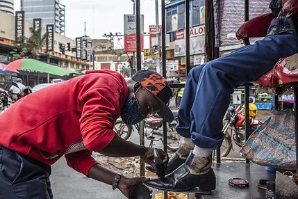
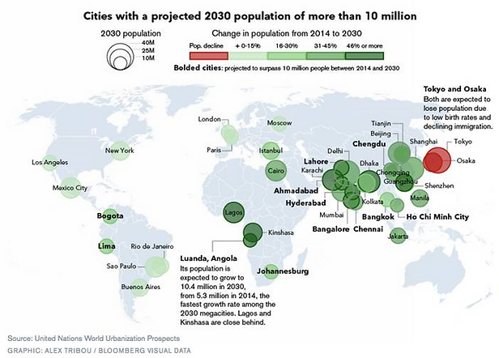
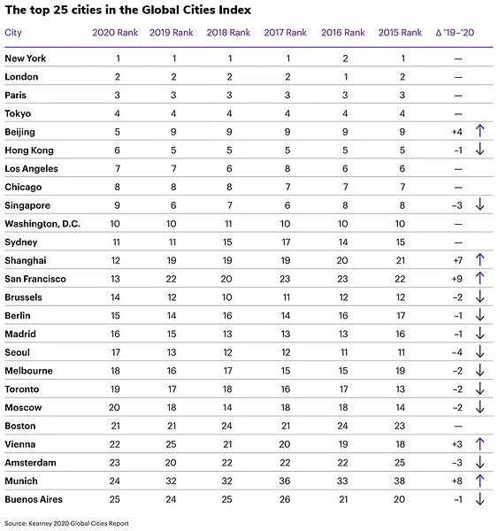

Megastad
Je hebt hele grote steden, met heel veel inwoners. Deze miljoenen steden kom je vooral tegen in ontwikkelingslanden. Daar zijn steden van meer dan 17 miljoen inwoners. Een stad met meer dan 10 miljoen inwoners wordt een megastad genoemd. In deze steden is de urbanisatie is erg groot: veel mensen trekken van het platteland naar de stad toe. Het platteland heeft te slechte levensomstandigheden, zodat de mensen het geluk proberen te zoeken in de stad. Zij willen namelijk aan het werk komen, met een vast inkomen. Veel mensen gaan geen werk vinden in de en komen terecht in de informele sector (vluchtsector) of het criminele circuit.
Figuur 1: een schoenpoetser werkzaam in de informele sector
De mensen komen vaak te wonen in sloppenwijken van deze miljoenen steden. Momenteel vinden we de meeste megasteden in Azië, maar ook veel in Noord en Zuid-Amerika. Dit komt doordat de welvaart in Afrika en Azië zal verbeteren, maar vooral door de bevolkingsgroei in Afrika.
Vaak zijn in sloppenwijken de basisbehoeften niet of niet volledig aanwezig. Een basisbehoefte is iets wat iedereen echt nodig heeft om redelijk te kunnen leven (eerste levensbehoeften). Het zijn er vier: voedsel, huisvesting, onderwijs en gezondheidszorg.
Met name de huisvesting is vaak onvoldoende aanwezig in sloppenwijken. Een huis moet namelijk stevig zijn en er moet een toilet, afvoer en schoon water aanwezig zijn. De watervoorzieningen worden vaak gehaald uit de dichtstbijzijnde rivier.
Figuur 2: (mega)steden in 2030 met meer dan 10 miljoen inwoners
Wereldsteden
Naast megasteden heb je wereldwijd ook steden die veel invloed uitoefenen op wat er in de wereld gebeurd. Voorbeelden zijn New York, Londen of Parijs. In deze steden zitten namelijk veel hoofdkantoren van multinationals. Hier worden allerlei economische beslissingen genomen die gevolgen hebben voor fabrieken elders in de wereld. Naast de grote hoofdkantoren zit er in New York ook het gebouw van de Verenigde Naties. Hier worden allerlei politieke beslissingen genomen die gevolgen hebben voor de rest van de wereld. New York noemen we daarom een wereldstad. Een wereldstad is een stad met invloed op het gebied van economie, politiek en cultuur.
Figuur 3: ranglijst van wereldsteden 2020 - 2015
Basisbehoeften
Steden worden te duur...